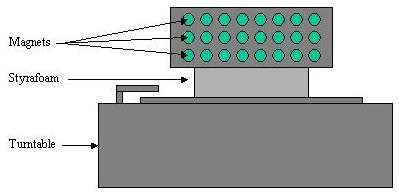

Test - Phase II
Drawing of Pulse Device (so, I'm not an artist!) Pulse Device:

8/11:
Just a quick note. I sped up the pulse to the 33 rotations per
minute (instead of 27) and when I laid down to meditate, my body was
immediately "thumping". I don't know what that is all
about but I literally could feel a frequency "pulse" at
very steady intervals (about two thumps per second). Like magnetic
pulses or waves.
8/9:
Assembling the magnetic pulse device was a lot harder than I
thought. I ordered a single magnet from the ForceField company so I
could use the mu-metal box it came in. A hammer was used to pound it
flat as its original shape was an L. The magnets stuck to it easily.
They were stacked in a cylinder type formation previously, but they
have now been separated, and all 25 are side by side on ONE side of
the flat mu-metal. Then it had to be determined how to stick the
mu-metal to the turntable. This took awhile as it kept
"grabbing" the sides of the turntable since the side
components on the turntable had metal objects which the magnets
gravitated towards. So it kept sliding off the turntable! The final
outcome was putting it on top of a styrofoam box (with the loaded up
mu-metal resting on an L shape bracket for support) so it would be
4" elevated from the turntable and not be drawn to the magnetic
components. Then the turntable arm had to be rigged so it would
think it was playing a record. Tried some shoo goo, but that didn't
work, so I used a rubber band to tie it in place. So after about two
hours of fiddling and adjusting, it now sits at the end of my bed on
a barstool. Luckily the 33 speed also came with a -6 dial which
makes it now rotate at a 27 speed so the dimmer switch may not be
necessary. My first night with the device was like having the
magnets as it was in the beginning. There were small vibrations,
increased tones, and I felt lots of rocking of my astral form, which
is a really good sign. I now need to find out if it should be going
faster or slower and what kind of hertz are being generated with 25
(1") magnets. If one 1/4" neodymium magnet is 12,300
gauss, then 25 (if linearly additive) would be 307,500 gauss or
30.75 Teslas! It's not a question of strength now, just proper
cycles per second and location in the room. Well, need to check with
my brainy readers on this one!
I'm sure I'll have to make adjustments as necessary! I am also trying to come up with a name for this device. I jokingly call it the Magnetic Flux Capacitor!
7/31:
Had a projection on Saturday. Woke up in the astral to find someone
next to me. He touched me (I figured it was a male, as I doubt a
female would do this) and I asked him what his name was (he told me)
and he also said that he had been with me the night before. I
interrupted this to go downstairs to check out a noise, but I popped
back to my body.
Tonight I'm moving my magnets out of my loft and only practicing with them on the weekends to reduce my getting used to them. I received some helpful input on how to create a magnetic pulse of which I plan on creating in the next two weeks. I'm purchasing a turntable (record player), a dimmer switch, and mu-metal. I'm running the mu-metal down the middle of the turntable (mu-metal obstructs a magnetic field). I am then putting all 24 magnets on one side of the mu-metal barrier. A dimmer switch is used to lessen the flow of electricity to the turntable, thus creating the ability to slow down the rotation cycle. according to my radio friend, Tim, a moving magnetic field will induce an electrical signal into any nearby conductors (same theory as generators). The moving magnetic field will hopefully induce an electrical signal into my brain (sounds kind of scary!), at a frequency determined by how often the magnetic field switches between North and South. He suggested setting up the device to generate a frequency between 3.5 and 4 Hertz which is used on some of the Hemi-Sync tapes. Another suggestion of his was a frequency between 7 and 8 Hertz (the "Schumann resonance frequency") which is one of the main frequencies carried by the Earth's magnetosphere. Thanks Tim!!!
7/21:
The intense tones continue, but I'm not sure what to do with them.
Not sure how to turn them into a projection... Have to think about
that. I am trying something new today. I'm fasting for two days to
see if the weakening of the hold over the astral body, in
conjunction with the aid of the magnets, leads to a projection. Will
post results on Monday.
7/5:
I've been particularly impressed with week one with my additional
magnets. I worked for 20 minutes last night on my OM sound (in my
head as I heard that was alright). I didn't do this out loud because
it's kind of uncomfortable trying to achieve Focus 10 while taking
these big breaths and letting out the sound just right as not to
rush through it. I also find that doing this while laying down is
more efforts than I want to exert. Again, multiple times during the
night, I became lucid with either strong vibrations or tones. It's
now just a case of learning how to manipulate them into being strong
enough for a projection. I'm also incorporating new chakra work with
all of this per some information I recently read on the web Wren.
I imagine white energy at my feet, then I mentally take my hands and
work this up to my base chakra and stimulate it. I do this about
four times. When I can actually feel the energy stimulated, I
proceed to the next chakra, and so forth, until all seven of the
primary chakras are stimulated. I am doing a lot of new things, and
I'm sure it's the mix of all of these, plus the magnets, that
attribute to the nightly tones and vibrations.
As I am on vacation for a week and won't be doing any magnet tests as I doubt they will let me bring 24 powerful magnets on the plane! I will resume the tests when I return on 7/12. I will, however, continue my sound, light work and chakra work.
7/4:
I think I have been underestimating the impact of tones in my work.
I noticed that the more energy and magnet work I do, the more I hear
tones (both in terms of frequency, and pitch). After I did about
three hours of extended remote viewing tapes, meditation and energy
work last night, I fell asleep and kept dreaming about TONES (kind
of like those powerful ones I got when I first received my second
set of magnets). I dreamt my head was by a wire and I kept hearing
various frequencies. The fact is, I WAS hearing the tones, but my
subconscious turned it into a dream. Even when I woke up and laid on
my right hand side, I could hear constant humming. It's interesting
the correlation of tones and spiritual progress. It is said that
every vibration has a corresponding sound and everything in the
universe has a vibration and thus a sound. Each atom, molecule,
cell, object, group of objects, even the entire universe, has its
own collection of vibrations and unique sound. I'm sure this is why
monks do so much chanting and the usage of the 'OM' sound and why on
the Gateway Series tapes that I have, Robert Monroe says on almost
every one of them to do the "resonant tuning" (what he
means by that is, is to match the tone on the tape to your own voice
and "tune" the two tones.) Ironically, my first conscious
projection was while I was listening to classical music. I think,
starting immediately, I will add some tone work to my efforts (about
10-20 minutes nightly). I can't help but think that the body (both
the light and dense ones) are stimulated by these 'reverberations'.
6/29:
I had a pretty intense first night with my magnets. In fact, at one
point, I questioned my sanity over this project! It was very hot
yesterday, in terms of Seattle weather, and my loft was exceedingly
warm which may have had some impact (but which way, I cannot say). I
placed all 24 magnets at the base of my bed (it's a 4 poster log bed
so I used velcro to attach them to the horizontal log by my feet).
It was just like when I first got my original set of magnets. My
astral face twisted, my crown and brow chakra swirled and pulsed
non-stop. I felt a general pulling of my whole body towards the
magnets at all times. I tried to do one of the Gateway tapes, but
quit half way through as the fan was too noisy to hear what was
being said on the tape. In the middle of the night I became lucid. I
saw myself on a prairie looking at golden wheat blowing in the wind
(I don't know why, but I felt like I was an Indian). It was at this
point that the "tones" started. They started to build to
such a crescendo that it sounded like a full blown tone orchestra
was going on! These are very different than the vibrations which are
associated with separation (these feel more physical than auditory).
Except looking back, I could have turned these into the vibrations
by focusing on my third eye, but what I did instead was to kill all
fear which was trying to creep in (as this was enormously
overwhelming) and just kept looking at that prairie. I then decided
to succumb to the auditory energy and it was like Life itself
flowing through me. The tones were of varying types and almost
shattering in pitch. I can't really describe the general feeling,
but I felt I was merging with these tones and that my internal
vibrations were rising.
Like sleep paralysis (the catatonic state), I think tones in our ears have been misdiagnosed. Some doctors say it's stress (actually, they don't have a clue...) but we all get them from time to time, and in varying pitches. I've had a sneaking suspicious about tones for awhile and what they really are, and last night makes me think I'm correct on something. The tones we hear are but filtered down snippets from the "orchestra of tones" like the one I heard last night. Life (even by scientific terms) are but multidimensional vibrations. These tones are just another form of energy, if not THE energy that we live in. Like radio and television waves, once removed from the physical shell, the filter is removed and we can experience in totality what can only be experienced in bits while in the physical shell. I also noticed that the further I get in my energy work/progress, the spectrum of tones that I hear widen (and increase in frequency) from the highest, barely audible pitch, to a very low baritone noise. I even noticed with concentration, I can control the longevity of the sound and even the pitch. If this was 'stress' only (of which I'm not feeling) then these would not be controllable.